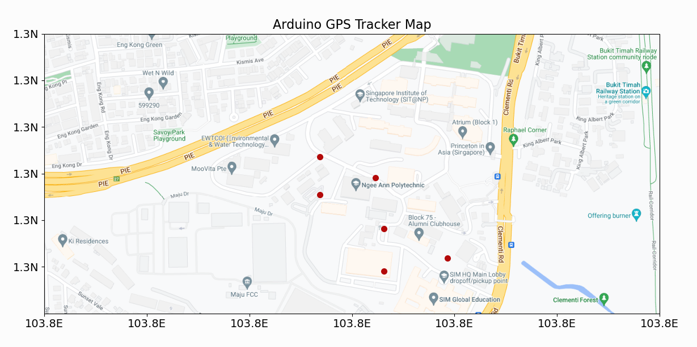

Week 1
This week during PFD, I encountered the question our sponsors have set for my class, data collection.
To suit the assigned task, I came up with the idea for SEER, a tracking device capable of sending location data
in real-time to a database and pinging nearby devices to find places with high and low traffic on routes.
The SEER was made to streamline the data-collecting process of security guards; while also being lightweight and seamless.
I thought of the idea for SEER as I heard the current system for tracking security guards is QR code scanning, which is clunky
and unable to capture the exact steps taken fully.
I was fortunate enough to have my idea elected as one of the top 5 and assembled a team capable of bringing
the vision to life together, which included me, my friend Jia Xian, Eddie and Jerel. I wanted a team that each brought
something to the table, thus I picked one team member that fell into a different category.
Jia Xian was confident in his coding ability, while Eddie prided himself on his UI/UX skills, lastly, Jerel was a
full-stack developer. After discussion, I was given the role of product master as I was the one who came up with the
concept and was deemed to have the clearest vision of what it should be, while Jia Xian was given the scrum master role.
Week 2
This week, we discussed further the feasibility of the initial idea for SEER, we looked online for a device
that would suit our needs, and the criteria were as follows, built-in GPS, wifi and Bluetooth capabilities,
as well as easily programmable.
We required a GPS to track the wearer, with wifi access to broadcast the location data to a database.
Lastly, Bluetooth was for us to possibly allow the device to ping gentries set up between levels of a building to
indicate which floor the wearer is on or is ascending or descending to.
This week we fully visualised what features our product should ideally possess and methods on how to achieve this
functionality. To this end, on top of having data transmitted in real-time to a database, we would also seek to create a
program that could plot out the route taken by wearers using the location data from the database. We also floated the idea
of creating gentries to track which floor a guard could be on.

As for how we planned to fulfil this suite of promised features, we would utilise DynamoDB to store our location data which
could then be pulled from by managers to feed into our route plotting program which would use MapPlotLib to visualise the data.
Lastly for gentries we would use Bluetooth to ping gentries to update the level wearers are on in the database.
Week 3
This week my team received its ESP32 NodeMCU, however, unfortunately, our GPS was not yet ready, thus this week was spent mostly
getting ready for the GPS, another thing we were also waiting on was our DynamoDB which similarly was not usable yet.
Due to the lack of ability to make much headway in the project, I do not have much to report on the progress this week, except
Jia Xian was working on understanding how to use the ESP32 MCU, performing several tests on it to explore how to use it in later weeks.
As we could not work on the ESP32 at the same time, I could only oversee the work as Jerel had taken the other task this week, which
tried to get the MapPlotLib working.
Week 4
Another unfortunate event occurred this week with both the GPS and DynamoDB still not being available, the GPS
was caught in transit while the status of our DynamoDB was unknown. This hampered progress as it meant we had to
get everything running during the two-day hackathon on week 5, without having any time beforehand to prepare.

However, some good news this week was that Jerel had managed to get MatPlotLib working, using fabricated data as our GPS
had not yet arrived to create a graph of the route taken by a theoretical security guard in the Ngee Ann Polytechnic premises.
It's able to read a csv file containing the location data and creates a plot based on the data within it. The graph is also
able to be saved as a png file for future reference.
Week 5
This week was the Hackathon, and our GPS system had finally arrived, meaning that Jia Xian could finally begin work on the ESP32.
However, we were still unable to use the DynamoDB, as it was not ready yet, meaning we had to cut this functionality for the
presentation on friday.
Me and Eddie were tasked with creating an accompanying website for our product, which would be used to display the data from the
database, when it was able to be set up. I also designed a new Icon for the SEER product, as the previous design we had used we could
no longer find.

A piece of good news was that we had already finished our presentation slides weeks in advance, and we were able to focus on the
product itself, rather than the presentation.
Jia Xian had attempted to get the GPS to work, however it was unable to output any data, and we were unable to figure out why.
This meant that we were unable to get the GPS to work in time for the presentation, and we had to cut it from the presentation.
We only had the MatPlotLib to show for our efforts, and was not able to show it with our website as it still was in development
by friday.
As the product owner, I deemed that despite all this we were still able to show the potential of our product, as the most impressive
part of the product was Jerel's progam being able to plot out routes using only location data. Thus I was still hopeful that we could
hold a successful presentation, and even win first place within our class.
On Friday I introduced the product to the class, and explained the features of the product, and how it would be used. I shared my vision
of the product, and how it would be used to streamline the data collection process for security guards. I also explained how the product
would be used to track the location of security guards, and how it would be used to plot out routes taken by security guards.

Jia Xian and Jerel also explained their parts of the project, and how they contributed to the project. Jia Xian explained how he was
tried to get the ESP32 to work, and how it would be used to track the location of the security guards. Jerel explained how he was able
to get MatPlotLib to work, and performed a live demonstration of the program to our sponsor.
We were unable to win as our project was not as complete as one of the other's in my class, however I was still proud of my team's
efforts, and I was glad that we were able to complete the project to the best of our abilities, especially with us having only two
days to work with the actual GPS and still being unable to access the database.
Week 12 & 13
At the start of the new term, we continued work on the project, and we were able to get the GPS to work, as we had ordered a new GPS
which was able to output data. We were also able to get the DynamoDB to work, and we were able to get the ESP32 to send data to the
DynamoDB.
The next step was getting the pyscript to work, and we were able to get it to work, however I had encountered a problem where the
pyscript was unable to run on my end and as I was tasked with creating the website, I was unable to deliver this functionality to my team.
The pyscript was extremely important as it could display our data in a more readable format, as it would read the data from the database
and output a map using the datapoints, which would be more readable than the raw data. Thus I will have to work on this in the coming weeks,
as currently it was unusable.
initally we had planned to use flask to run the script on the website however when I tested using it the script did not run at all,
as when I tried to run it individually and not through the website it failed to run and no images were created using our test data.
I found that cartopy was the problem, however even after using pip -install cartopy it still did not work.
Thus I was forced to have to resolve this issue the following week as there was no way to get the script to work on the website.
Week 14
The next week, I was able to get the pyscript to work, and I was able to get the website to display the data from the database.
I was able to get the pyscript to work by using the command prompt, and I was able to get the website to display the data by using
flask to run the script.

Afterwards I moved to improving the website's design, by touching up the website's design, fixing the previously unformatted text,
and improving the website's layout.
Week 15
This week was focused on further improving the design of the website as the other portions are complete. I was able to improve the
website's design by making it responsive to different screen sizes, and I was able to improve the website's layout by making it more
readable.
The navbar was made to shrink when the screen size was reduced making it usable even on phones, and the text was made to be more readable
on larger screens by increasing the font size. I had accounted for bigger screens as well when making the website more responsive, as
I realised using my larger monitor, the text was too small on my device, and realised that I should not only focus on a working mobile view
but also a working desktop view.
Week 16
This week was spent polishing up the remaining parts of the website, and I added more details to the website, including a new
contact page, and further improved the website's design.
However my group decided to redo all my work, as they were not satisfied with the website's design, and they wanted to improve
it by integrating it to a new template.
Tech Assessment
In week 17 I took the time to do the tech assessment, and I was able to get a better understanding of my current competencies,
and I was able to see what I needed to improve on.
I performed poorer on programming concepts than I had expected, as I encountered many questions where I have never been taught
the answers for, thus I was unable to answer them. I also performed poorly on the questions regarding the use of databases,
as I also had not learnt how to use them.
I will strive towards filling these gaps in my knowledge in the coming weeks, and I will work on improving my programming skills
in time for my internship.